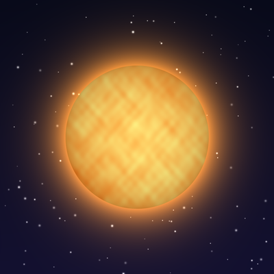
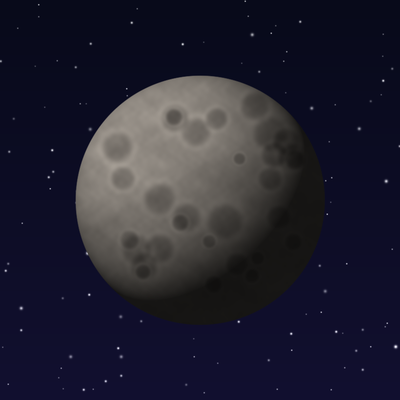
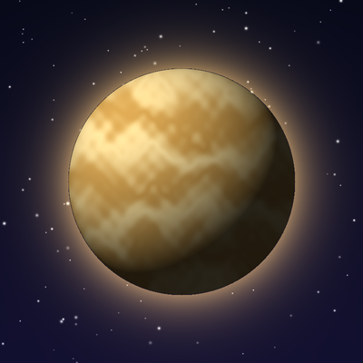
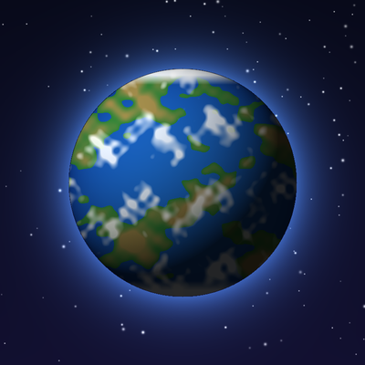
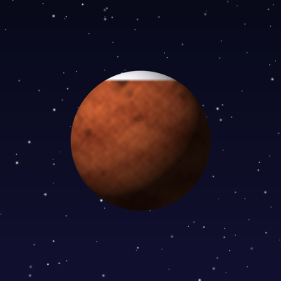
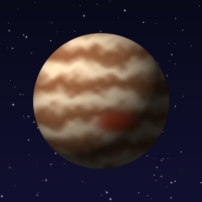
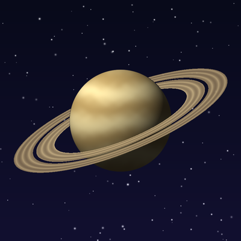
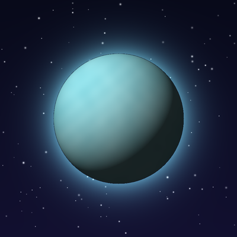
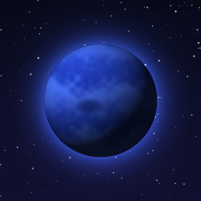

Our Solar System formed about 4.6 billion years ago from a spinning cloud of gas and dust. Most of that material collapsed into the Sun, and the leftovers clumped together into the planets we know today. This page introduces the Sun and the eight planets, in order of distance from the Sun.
The four inner planets, Mercury, Venus, Earth and Mars, are small and rocky. The four outer planets are far larger: Jupiter and Saturn are giants made mostly of hydrogen and helium, while Uranus and Neptune are icy giants. Resize your browser window, or change your device's color and motion settings, to see how this page adapts.








